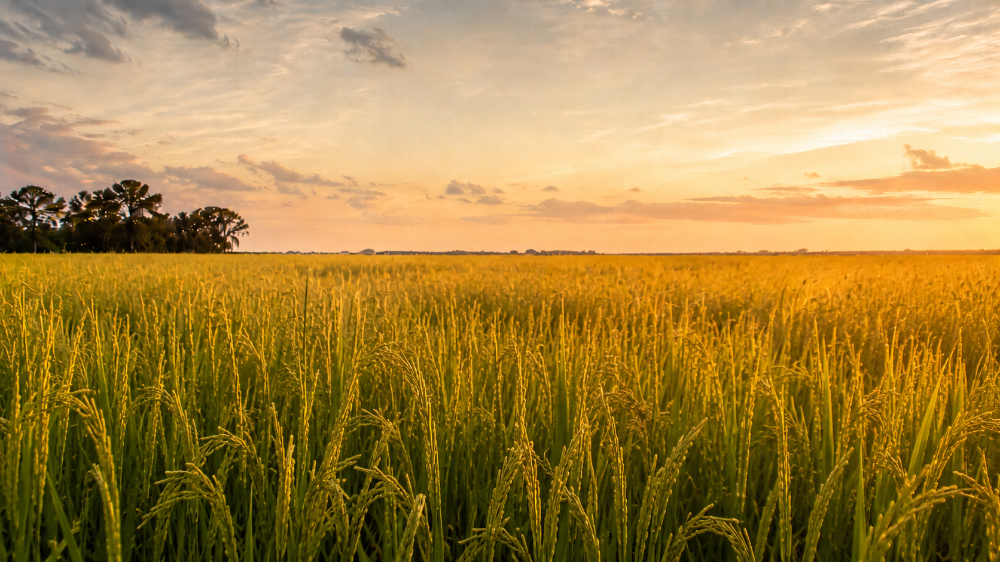

Crowley Modernism
Rice, oil, levees, and a modernism assembled from pumps, invoices, and wet heat.



Rice, oil, levees, and a modernism assembled from pumps, invoices, and wet heat.
A refusal of the South as soft-focus inheritance and decorative ruin.
Weather as labor condition, psychic pressure, and regional archive.